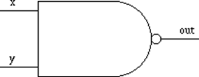

Logic Gate
AND Gate
| x | y | output |
|---|---|---|
| 0 | 0 | 0 |
| 0 | 1 | 0 |
| 1 | 0 | 0 |
| 1 | 1 | 1 |
OR Gate
| x | y | output |
|---|---|---|
| 0 | 0 | 0 |
| 0 | 1 | 1 |
| 1 | 0 | 1 |
| 1 | 1 | 1 |
NOT Gate
| x | output |
|---|---|
| 0 | 1 |
| 1 | 0 |
XOR Gate
| x | y | output |
|---|---|---|
| 0 | 0 | 0 |
| 0 | 1 | 1 |
| 1 | 0 | 1 |
| 1 | 1 | 0 |
NAND Gate

| x | y | output |
|---|---|---|
| 0 | 0 | 1 |
| 0 | 1 | 1 |
| 1 | 0 | 1 |
| 1 | 1 | 0 |
NOR Gate
| x | y | output |
|---|---|---|
| 0 | 0 | 1 |
| 0 | 1 | 0 |
| 1 | 0 | 0 |
| 1 | 1 | 0 |
Storage
| Storage | Data volatility | CPU accessiblity | Price | Storage space |
|---|---|---|---|---|
| Primary | Volatile | direct | more expensive | Less |
| Secondary | Non-volatile | not direct | cheaper | More |
Primary storage
- Examples of primary storage device: RAM, Cache
- volatile: the data are lost when the computer is powered off
- CPU can access data in primary storage directly
Secondary storage
- Example of secondary storage device: hard disk drive, USB flash drives, floppy disks
- Secondary storage is not directly accessible by CPU.
- A computer keeps its data for a longer time in secondary storage
CPU
Arithmetic and Logic Unit (ALU)
- The ALU performs both arithmetic and logical operations
- Arithmetic operations: fundamental math operations like addition, subtraction, multiplication, and division
- Logical operations: such as AND, OR and XOR make comparisons and decisions, and these determine how a program is executed
- For modern CPU, it may have two or more ALU
Control Unit (CU)
- instructs the rest of the computer system on how to follow a program’s instructions.
- directs the movement of data to and from processor memory.
Internal CPU Bus
- responsible for data / control signal transfer between the various units (e.g. ALU, registers and control unit).
Registers
- temporarily storage within the CPU (e.g. instructions and data)
Components on a motherboard
- CPU
- Controller circuitry
- Bus
- RAM
- Expansion slots for additional boards
- Ports for external devices
- Complementary Metal-Oxide Semiconductor (CMOS)
- Other Read Only memory (ROM)
- BIOS chips
Storage media of access time
- shortest -> longest
- Cache -> RAM -> Hard disk -> DVD -> Tape
Level 1 Cache (Internal)
- The Level 1 cache, or primary cache, is on the CPU and is used for temporary storage of instructions and data organized in blocks.
- Primary cache is the fastest form of storage. Because it's built in to the chip with a zero wait-state (delay) interface to the processor's execution unit.
- Level 1 cache is implemented using Static RAM (SRAM). (This is contrasted to dynamic RAM (DRAM), which must be refreshed many times per second in order to hold its data contents).
- Modern CPU usually has a separate Level 1 cache for each core.
Four basic operations of operating system
- input
- output
- processing
- storage
factors that affect the performance of a display device
- Screen size, dot pitch, response time, color depth, contrast ratio, screen resolution
Levels of Memory Hierarchy
- Size: Smaller(CPU) -> Larger(Tape)
The Chipset
- A chipset is a set of chips on the motherboard that collectively controls the memory cache, external bus, and some peripherals.
- Major Chipset Manufacturers: Intel, SiS, nVidia, ATI and ALi
- e.g. Intel Z390, AMD X570

Advantages of using Command Line Interface(CLI)
- Simple, Low overhead
- Stable and reliable
- Users have more controls on the operating system and file system
- Allow administrator to administer the system by remote login
Advantages for using graphical user interface GUI:
- Appealing
- More user-friendly
- Easier to learn
Daemon
- a process that runs on background
- Not under the direct control of an interactive user
- Does not have any screen output but waits for certain system activity then acts on it
- The parent process of a daemon is usually the init process
- launched during booting (i.e., computer startup) and run unobtrusively in the background until they are activated by a particular event or condition.
Directory Layout
- / - root, highest of the hierarchy
- /etc - local configuration files
- /bin - executables files
- /sbin - system utilities files (Administrator only)
- /lib - system library
- /dev - interface to device
- /usr - User application
Absolute path of the important file
/var/log
- Location of Log Files
/etc/systemd/system/default.target
- Configuration file for changing the default user interface
/etc/system.d
- a symbolic link to a directory that contains a number of startup scripts.
- The startup scripts perform a number of functions, including initialization of network connections and startup of server daemon processes.
Configuration files for account management
- /etc/passwd Contains an entry for each user on the system e.g. root:x:0:0:root:/root:/bin/bash
- /etc/group Contains definitions of groups and their corresponding members e.g. SDA2::502:student1,student2,student3
- /etc/shadow Stores account password information and contains password aging information e.g. juan:$1$.QKDPc5E$8F.:11956:0:90:5:30:12197:
/etc/fstab
- contains the file system table, which is a table of all disk partition, and their mount points and default mount options
- The first column is the device file name.
- The second column is the mount point.
- The third column in /etc/fstab specifies the filesystem type of the device or partition.
- The fourth column in fstab lists all the mount options for the device or partition.
- The 5th column in /etc/fstab is the dump option. Dump checks it and uses the number to decide if a filesystem should be backed up. If it is zero, dump will ignore that filesystem. If you take a look at the example fstab, the 5th column is zero in most cases.
- The 6th column is a fsck option. fsck looks at the number in the 6th column to determine in which order the filesystems should be checked. If it is zero, fsck will not check the filesystem.
Backup
Backup types
- Full backup
- Incremental backup
- Differential backup
Incremental backup
Differential backup
Logging
Type of Logging
- Software logs - Generated by running applications, these show the status of applications, errors and warnings.
- System logs - Generated by syslogd, these report the status of disks, hardware and system processes.
- Kernel logs - Generated by klogd, these are concerned with kernel processes, statistics and so on.
Two Approaches on Log Rotation
version based
- Version based rotated the log in such a way that the old file has a suffix 1, the older file has a suffix 2, etc. Each time log rotate N files are preserved.
date based
- Date based used daily or weekly of month rotation pattern and each rotated log is marked by timestamp.
Why logging is necessary?
- Identify hardware problems
- Identify software problems
- Evidence of hack-in
e.g. IP-Address, actions
- Record of user’s activities
e.g. command or script executed
Why logging policy is necessary?
- Disk space is limited (you cannot record all activities related to your system)
- Data has limited life cycle.
- e.g. log data of hardware may be only useful for a month.
Command
fdisk
- manage the Linux partition
- e.g. fdisk /dev/sda
mkfs
- used to put file system on the partition
- used to create et2/ext3/ext4 file system and ″ mkswap″ is used to create swap file system.
- e.g.
- mkfs -t ext3 /dev/sdb2
- mkfs -t ext4 /dev/sdb2
- mkfs.ext3 /dev/sdb2
- mkfs.ext4 /dev/sdb2
mount
- used to mount the partition into a mount point (a directory), to start using the filesystem.
- e.g. mount /dev/sda1 /mnt
Automatic mounting
- Add an entry in /etc/fstab
umount
- e.g. umount /dev/sda1
man
- displays the manual pages of the command
pwd
- to see the current working directory
cd
- used to change to other directory
- "." is another special directory. It means the current directory.
- ".." means parent directory
e.g. the parent directory of /home/lily is /home
- "~" means home directory of the user
ls
- lists the content of a directory
- "ls -a" lists all files, including hidden files.
- "ls -l" lists all files with detail information
- "ls -al" = "ls -la" = "ls -l -a"
- 第一列共10位，第1位表示文档类型，d表示目录，-表示文件，l表示链接文件，d表示可随机存取的设备，如U盘等，c表示一次性读取设备，如鼠标、键盘等。
- 后9位，依次对应三种身份所拥有的权限，身份顺序为：owner、group、others，权限顺序为：readable、writable、excutable。
- 如：-r-xr-x---的含义为当前文档是一个文件，拥有者可读、可执行，同一个群组下的用户，可读、可执行，其他人没有任何权限。
- 第二列表示链接数，表示有多少个文件链接到inode号码。
- 第三列表示拥有者
- 第四列表示所属群组
- 第五列表示文档容量大小，单位字节
- 第六列表示文档最后修改时间，注意不是文档的创建时间哦
- 第七列表示文档名称。以点(.)开头的是隐藏文档
cat, less, more
- displays the content of a file (it should be an ASCII file)
cp
- copies a file from one directory to another directory
mv
- moves a file from one directory to anther directory
- renames a file in a directory
touch
- used to update the time stamp of the file
- If the file is not exist, it creates the file
mkdir [directory]
- create directory
- -p: directory with path, e.g. mkdir -p retail/drinks/coffee
rm [directory]
- delete empty directory
- 将工作目录下，名为 AAA 的子目录删除 :
rmdir AAA
- 在工作目录下的 BBB 目录中，删除名为 Test 的子目录。若 Test 删除后，BBB 目录成为空目录，则 BBB 亦予删除。
rmdir -p BBB/Test
rm
- remove a file or directory
- parameters:
- -f: no confirmation
- -rf: removes the directory even it is not empty
find [path] –[argument] [criteria]
- e.g. ″find / -name john″
- This command start the search of the file ″john″ from ″/″
- e.g. ″find /home –name john.*" means the search started from directory ″/home″, targeted filename ″john″ with any extension
shutdown
- Shutdown the machine
shutdown –h now
- Reboot the machine
shutdown –r now
reboot
su
- Switch User
sudo
- execute a command as another user
ps
- Lists processes currently running on system
- S field: Process States(Running (R), Sleeping (S), Stopped (T), Multi-threaded (I), Zombie (Z))
A zombie process is one which is no longer in effect.
It is a process which has been killed.
- UID field: Owner of this process
- PID field: Process ID
- NI field: Nice Value
top
- Displays list of running processes
%CPU field(Form of percentage)
- Compares amount of CPU time used by process with total time elapsed since previous computation of %CPU field
%WCPU field
- Weighted to show 30-second average of percentage of CPU time used by process
- Helpful for showing overall usage pattern
TIME field
- Provides cumulative measure of amount of CPU time consumed by process
kill
- used to send signal to a running process, usually to request termination of a process.
- -l option views all signals
nice
- to change the nice level when starting a new process
- $nice –n 5 myprocess(or nice -5 myprocess)
- $nice –n -10 myprocess
- the range of nice value a general user can set in a Linux system is 0 to +19
renice
- to change the nice level of a running process
- $renice +10 1776
- $renice -8 1776
bg
- Run suspended program in background
fg
- Place suspended job in foreground
- Must specify:
- Job number using %
- Or PID
last
- used to list last logged in user
dmesg
- used to print out the bootup messages
e.g. which hardware / software are started / initialized
- Useful for identify problems
journalctl
- used to interact with the journald which is a daemon manage some log files
- journald is a component of systemd
useradd [user_name]
- used to add user to a Linux system
- e.g. useradd student
usermod [user_name]
- used to change user’s information
- e.g.
- usermod -L tjones
- usermod -U tjones
userdel [user_name]
- used to remove users who no longer requires access to the system
- parameters:
- -r: remove the home directory of user and any files contained in it.
finger [user_name]
- display the information of user
groupadd [group_name]
- used to add new group to system.
- -g: Permits the specification of the group ID number instead of using the next-highest number defined by the system
- -o: Permits to add group with non-unique ID
groupdel [group_name]
- used to remove a user group
groupmod [group_name]
- used to adjust previously created groups
- parameters:
- -g gid - change the numerical value of the group's ID.
- -n group_name - The name of the group will be changed from original group name to group_name.
chmod
- used to set the permission values for files and directories
Letter Permission Value r Read 4 w Write 2 x Execute 1 - e.g The following chmod command (in octal form) gives
- Owner => Read, write and execute permission
- Group => Read and execute permission
- Everyone => Read only permission
- [root@myLinux]#chmod 754 examination.doc
chown
- used to change the ownership of a file to someone else
- Only the root user can use this command
- [root@myLinux]#chown student tutorial.doc
- The -R option applies when the specified filename is a directory name.
- [root@myLinux]#chown -R student tutdir
chgrp
- used to change the group settings of a file
- It works much like chown
- [root@myLinux]#chgrp student tutorial.doc
- The -R option applies when the specified filename is a directory name.
- [root@myLinux]#chgrp -R student tutdir
passwd
- used to change the password of an established account
- can be invoked by generic system users as well as the system administrator
- Remark: -l and -u options in passwd can be set to lock and unlock the user’s account.
- -d: delete password
ln [target_file] [file_path]
- Both hard links and symbolic/soft links can be created using the ln command.
- While the –s option of the ln command creates a symbolic link, with no option it creates a hard link.
- e.g.
- ln abc.txt mylink.txt <= hard link
- ln –s abc.txt mylink.txt <= symbolic link